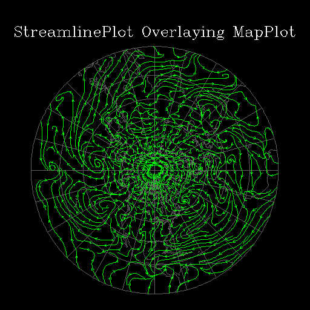

StreamlinePlot example 3
This StreamlinePlot example can be created using HLU C library calls,
HLU FORTRAN library calls, or NCL. It shows how to overlay streamlines
on a polar stereographic map projection. The names of the source files
for this example are st03c.c, st03f.f, and st03n.ncl.

Discussion
This module discusses how to create this plot using HLU function calls
or NCL. A resource file is included with this example, and it is
called st03.res.
This file is used to change the default resource settings for the
plot. Some of the StreamlinePlot line resources are tweaked in the
resource file to show how to change the appearance of the vectors.
A detailed discussion of how this example works appears in its
source code.
The HLU C program that generates this plot is
called st03c.c.
The HLU FORTRAN program that generates this plot is
called st03f.f.
The NCL script that generates this plot is
called st03n.ncl.
The data for this plot is from a netCDF file (created by NCL) called
941110_UV.cdf containing UV wind data for a series of lat/lon
coordinates.
The data file is located in your NCAR Graphics data directory in a
subdirectory called "cdf". You can get the name of the data directory
by typing "ncargpath data" at your shell prompt. If you have netCDF
installed on your system, then you can change directory to where the
netCDF file resides and type "ncdump -h 941110_UV.cdf" to view the
header information for this data file.
This example can be created using a C program (st03c.c), a FORTRAN
program (st03f.f), or an NCL script (st03n.ncl). The examples are
installed in the following locations:
- $NCARG_ROOT/lib/ncarg/hluex/streamlineplot/st03c.c
- $NCARG_ROOT/lib/ncarg/hluex/streamlineplot/st03f.f
- $NCARG_ROOT/lib/ncarg/nclex/streamlineplot/st03n.ncl
The resource file for this example is located in:
- $NCARG_ROOT/lib/ncarg/resfiles/streamlineplot/st03.res
The netCDF data file is installed in the following location:
- $NCARG_ROOT/lib/ncarg/data/cdf/941110_UV.cdf
You can copy this example and run it by typing "ng4ex st03c", "ng4ex
st03f", or "ng4ex st03n". A copy of the source file and resource file
will be placed in your current working directory. The source code will
be compiled and automatically run for you. You must have the netCDF library
installed on your system in order to compile the C or FORTRAN version
of this example.